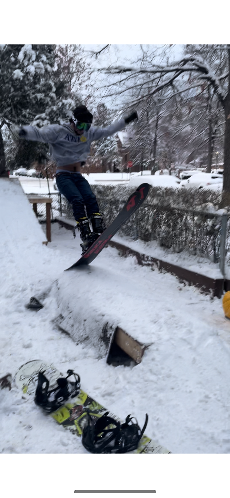
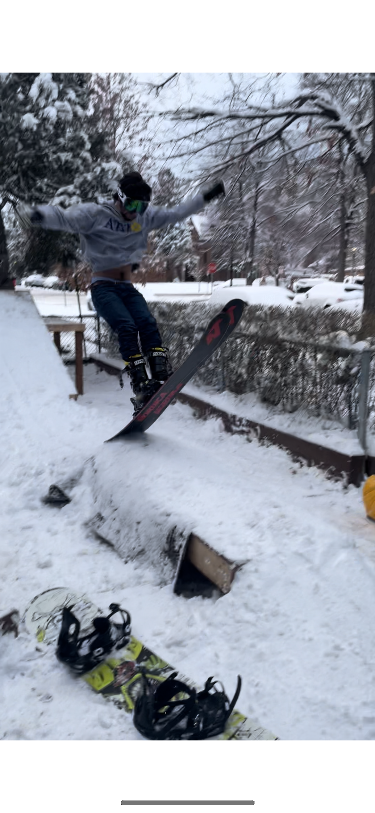
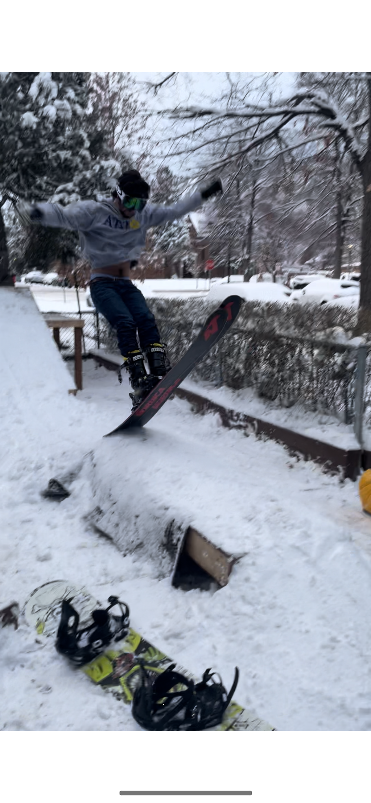

Hobbies
Skiing
Hiking
Boating
Cooking
Videogames
Photography
Photos
 


This is my bio webpage. I created this to share information about myself and show off my CSS styling skills.
I am a CTD major at Cu Boulder. I was born and raised in Washington, D.C. and moved to Colorado to study at CU. I joined the Alpha Tau Omega fraternity during my first year of studies.
In the summer of 2022, I worked at Hoffman & Associates as a quality assurance intern at the Warf in D.C. This experience taught me the importance of formality in the workplace and skills required to talk to executives in large companies. Prior to this, I spent summers working as a food prepper and bus boy at restaurants in my neighborhood.
